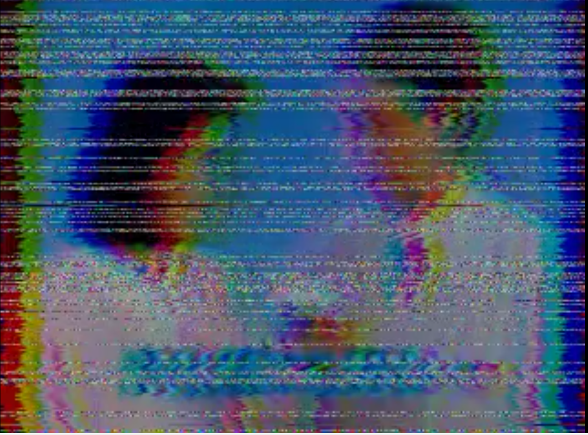
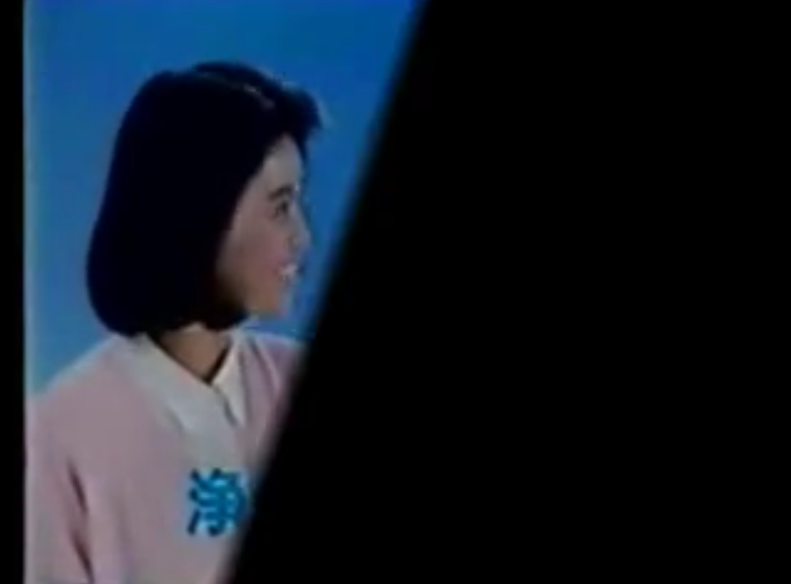
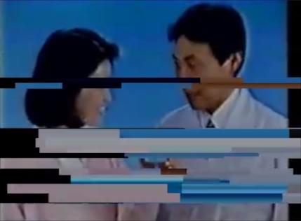

Subtracts a delayed copy of the frame from the current frame. Motion lights up white; still areas go dark. The Hardness slider collapses the greyscale toward pure black and white — at full hardness any pixel that moved even one unit snaps to pure white, giving a crisp, high-contrast silhouette (and a pleasantly grainy, noisy look at mid values).

Finds the N most dominant colours in the frame and remaps every pixel to its nearest one — a posterisation that stays true to the actual palette of the image. The Pal.Rotate slider cycles through the N palette slots, swapping which colour gets assigned where — same number of colours, completely different hues.

Draws concentric rings centred in the frame. Pixels that fall inside a ring are colour-inverted; pixels in the gaps between rings are left untouched. Three sliders let you dial in the count, width and spacing of the rings.
Draws full-width inverting lines across the frame. Pixels that fall insideDownload a line are colour-inverted; pixels in the gaps are left untouched. A rotation slider lets you swing the lines from horizontal to vertical and everywhere in between.
Bright pixels in the frame act as particle emitters. Each frame a batch of pixels above the luminance threshold are sampled and spawn glowing particles that fly outward in random directions. Every particle traces a straight path and fades from full brightness at birth to black at the end of its lifetime — additively blended onto the frame so clustered particles bloom white. The Hue slider cycles through the full colour wheel at full saturation; Speed sets how fast particles travel; MaxAge controls how long they live before disappearing.

Stacks four classic VHS tape artefacts in one pass. All four effects are independent — dial each to zero and the frame passes through clean; push them together for full tape-meltdown.
Shift jitters every scan line left or right by a random amount — most rows drift subtly, but 1 in 16 snaps to a large offset for the characteristic VHS tape-snap look. Chroma separates the RGB channels horizontally: red shifts left, blue shifts right, leaving colour fringing on every hard edge as though the chroma signal arrived late. Noise turns a random fraction of rows into static bands, blending them with white noise — the heavier the slider, the more rows are hit and the denser the grain. Tracking picks 1-4 horizontal slabs of the frame each frame and displaces them by a large random amount sideways, mimicking a VHS head that can't find the tape path.

A black band sweeps in from a random direction, covers up to MaxCrop of the image, holds at that position, then retreats. Each cycle picks a fully random sweep angle across the full 360° — so crops can arrive from any corner, edge, or diagonal, and no two wipes look the same. The effect idles between cycles — slower Speed means longer rests and gentler build-ups; faster Speed makes it relentless.
The 4th parameter, Softness, feathers the advancing edge: at zero it is a pixel-sharp cut; turned up it becomes a wide gradient blade that fades the image to black over a quarter of the crop range. Low Softness reads as a hard digital wipe; high Softness reads as a cinematic light leak or vignette sweep.

Simulates a partially clogged VHS read head. When a head clogs, the tape signal drops in discrete horizontal bands: the head drags through residue instead of reading cleanly, producing thick smeared slabs of frozen colour. All four parameters are independent — zero them out and the frame passes through untouched; push them together for a full tape-meltdown.
Clog places 1–5 horizontal signal-loss bands at random positions on the frame. Thickness sets the vertical height of each smear stripe: rows inside a band are grouped into slabs of 1–16 lines that all share the same hold/fresh pattern, so individual streaks grow from hair-thin to chunky bars without affecting the band size. Smear makes the head "drag": each pixel has a growing chance to repeat its left neighbour instead of reading a fresh sample. The probability tops out at 98.5%, giving an average streak of ~66 px, so full Smear fills entire rows with one dragged colour. Flutter controls how rapidly the band positions shift; at zero bands are nearly frozen, at one they jump to new positions every frame.
Three plugins that share a common pool of three named memory slots (A, B, C) and together break Resolume 2.41's strictly linear signal flow.
BufferCapture writes the current frame into a slot and lets you control what it returns — black, the original frame, or any blend between them via the Passthru slider. Use it wherever you want to tap the signal. BufferCrossfade reads any two slots and outputs a blend between them — the live clip is replaced entirely by the buffer mix. BufferReceiver blends one slot against the live clip running through it — one side of the crossfade is always what is playing right now. Unwritten slots output black.
Resolume 2.41's standard routing is fixed: three clips → per-clip effects → layer mix → three global effects, top to bottom. Every step happens in order; you cannot tap the signal mid-chain or route it sideways. These plugins change that.
Some things you can now do that aren't otherwise possible:
- Wet/dry for global effects. Capture the clean mix to BufferA before a heavy effect, capture the processed result to BufferB after it. BufferCrossfade anywhere in the chain blends the two — a wet/dry knob that FreeFrame effects don't natively have.
- Overlay a buffer onto a live clip. Put BufferCapture on one clip to freeze a moment into a slot. On any other clip, use BufferReceiver to crossfade that frozen frame into the live output. The live clip keeps playing; the Mix slider dials in how much of the capture shows through.
- Freeze and recall. Capture a moment to a buffer, keep performing live, and crossfade back to the frozen frame at any point. Standard Resolume has no frame-hold.
- Effect chain branching. Tap the signal at two different points in your global effect chain into separate slots, then crossfade between those two snapshots — a blend between two different depths of processing.
- Feedback loop. Set BufferCapture's Passthru to full at the end of the global chain — the frame passes through while being written to a slot. On the next frame, BufferCrossfade earlier in the chain blends that output back into the live signal. Each frame is a mix of now and a moment ago: trails, smearing and accumulation that build over time. The Mix slider controls how much of the previous frame survives, from subtle echo to near-frozen persistence.
A silent passthrough effect that simultaneously broadcasts the current clip/stream as an NDI video source on the local network. The clip is not visually altered — NDI output is a side-effect. Any NDI receiver on the same network (OBS, vMix, NDI Monitor, another Resolume) will see a source named Resolume 2.41 and can pull it in live.
Drop it on a clip to stream that clip, on a layer effect slot to stream the layer output, or on a global effect slot to stream the full mix. it is typically used as last global effect to stream the whole mix.
Setup — one-time install on the Windows machine:
-
Download and run the NDI 6 Tools installer from
ndi.video.
This installs
Processing.NDI.Lib.x86.dlland sets theNDI_RUNTIME_DIR_V6environment variable that NDIOut uses to find it at startup.
If the NDI runtime is not installed, the plugin loads silently and the clip passes through — Resolume will not crash.
A FreeFrame source that receives any NDI stream on the network and feeds it directly into Resolume as a video source. The Source slider steps through all currently visible NDI sources; the parameter display shows the name of the selected source. The source list refreshes automatically every two seconds — new senders appear without any interaction needed.
Works seamlessly with NDIOut: capture one clip with NDIOut, receive it in another clip (or even another machine on the same network) with NDIIn.
Setup — same one-time install as NDIOut:
-
Install NDI 6 Tools from
ndi.video
to get
Processing.NDI.Lib.x86.dlland theNDI_RUNTIME_DIR_V6environment variable.
If the NDI runtime is not installed the plugin outputs a black frame — Resolume will not crash.